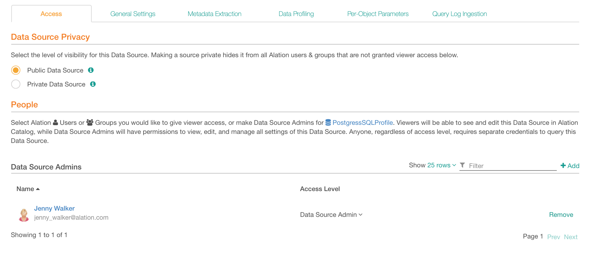
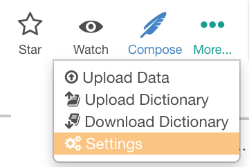
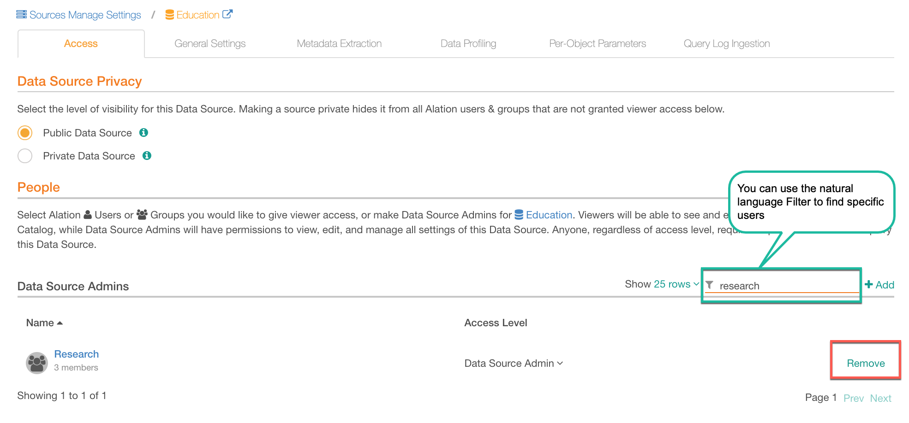
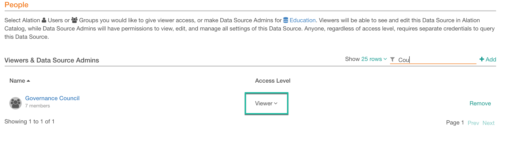
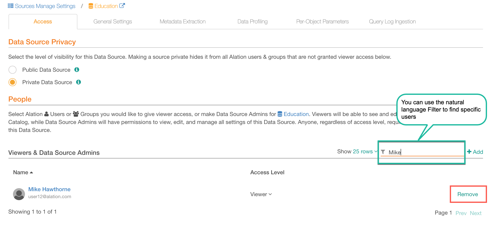

Access Tab¶
Alation Cloud Service Applies to Alation Cloud Service instances of Alation
Customer Managed Applies to customer-managed instances of Alation
The Access Tab of the Data Source settings page allows you to manage visibility of a data source in the Alation catalog: you can set a data source as Public or Private and add users or groups as Data Source Admins to allow them to see and manage the settings of this data source:
{kind=link}
Data Source Privacy¶
Choose an option under Data Source Privacy:
Public data source is visible to everyone.
Private data source is visible only to users explicitly assigned as Viewers or Data Source Admins and to users with the Server Admin role.
You can switch between these options when necessary and make a public data source private and vice versa. The visibility of this data source in the catalog will change accordingly.
Data Source Admins¶
To view and change the settings of a data source, you must be assigned as a Data Source Admin to this source. The Data Source Admin function will allow you to access the Settings page, assign Viewers and other Data Source Admins, change the connection parameters, and schedule and run data jobs, such as Metadata Extraction (MDE), Profiling, or Query Log Ingestion (QLI).
Data Source Admins can be individual users or groups.
The Server Admin role does not provide default access to the settings of a data source. Server Admins can see all the data sources in the catalog, both Public and Private, but they cannot access the settings unless they explicitly grant access to themselves or are granted access by others.
Access for Server Admins¶
To get admin access to a data source,
Sign in to Alation as a Server Admin.
Find the data source you want to be the Data Source Admin of and open its catalog page.
In the upper-right corner of the page, click More then click Settings:
In the dialog that opens, click Go to “Access”:
The Access tab will open. Under People > Data Source Admins, click +Add and in the quick search list that opens, find and add yourself as a Data Source Admin:
Refresh the page. The change will apply and the other tabs of the settings page will become active. You can now work with any settings of this data source.
{kind=link}
{kind=link}
{kind=link}
Adding and Removing Data Source Admins¶
Data Source Admins can add and remove other Data Source Admins.
In Alation, find the data source you want to add/remove Data Source Admins to/from and open its catalog page.
In the upper-right corner of the page, click More then click Settings:
Note
The Settings link is only visible to Data Source Admins of a source or to users with the Server Admin role.
{kind=link}
3. The Access tab of the settings page will open. Under People > Data Source Admins click +Add and in the quick search list that opens, find and add users or groups:
{kind=link}
To remove the Data Source Admin function from a user/group, click Remove for this user/group in the Data Source Admins table. The permissions to access the settings will be revoked from this user/group:
Note
You cannot remove the last remaining Data Source Admin from a data source.
{kind=link}
Data Source Viewers¶
For users or groups of users to be able to see a Private data source in the Alation catalog, they must be assigned as Viewers to this data source.
Note
Unlike Private data sources, Public data sources can be searched for and viewed by everyone.
Adding Viewers¶
Data Source Admins can assign Viewers to a private data source.
To designate Viewers, on the Access tab of the settings, under People > Viewers & Data Source Admins, click +Add on the right and in the quick search list that opens, find and add users or groups. By default, they are added as Viewers:
{kind=link}
You can switch from Viewer to Data Source Admin access and back for individual users and groups. To do so, find these users/groups under Access tab > People > Viewers & Data Source Admins and in the Access Level column, select a value from the Access Level list:

To remove any type of access from a user/group, click Remove for this user/group:
{kind=link}